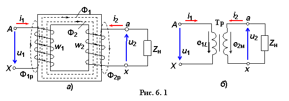

Простейший трансформатор (рис. 6.1а) состоит из трех частей: магнитопровода и двух обмоток: первичной и вторичной.

Использование ферромагнитного магнитопровода (стального сердечника) позволяет усилить электромагнитную связь между обмотками, т.е. уменьшить магнитное сопротивление контура, по которому замыкается магнитный поток Ф.
В трансформаторе обмотка с более высоким напряжением называется обмоткой высшего напряжения (ВН), а с более низким – обмоткой низшего напряжения (НН). Начало и конец обмотки ВН обозначают буквами А и Х, а обмотки НН – буквами а и х.